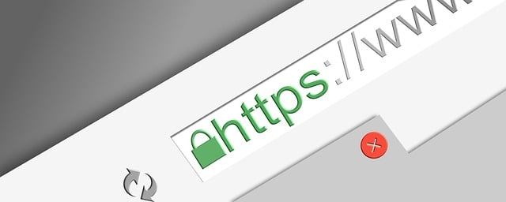
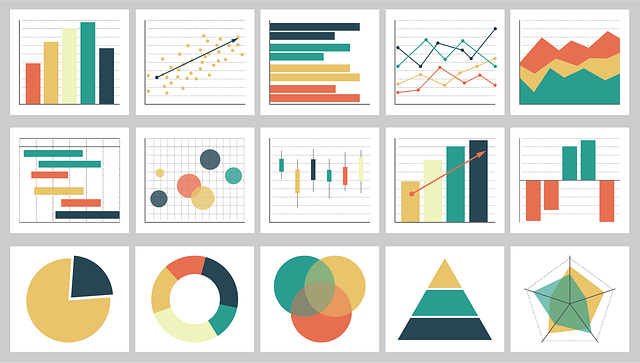

10 Dicas de SEO para Aumentar o Tráfego Orgânico
Aprenda estratégias eficazes para melhorar o SEO do seu site e aumentar o tráfego orgânico. A seguir, compartilhamos 10 dicas essenciais para impulsionar sua presença online e atrair visitantes qualificados para o seu site.
1. Otimize o conteúdo para palavras-chave relevantes
Identifique as palavras-chave que seu público-alvo está procurando e incorpore-as naturalmente em seu conteúdo, títulos e meta descrições. Ferramentas como o Google Keyword Planner são úteis para encontrar termos de alto volume e relevância.
2. Crie conteúdo de qualidade e relevante
O conteúdo é rei! Produza conteúdo valioso que responda às perguntas do seu público-alvo. Isso aumenta a retenção de visitantes e as chances de backlinks. Use o AnswerThePublic para descobrir perguntas frequentes que podem ser respondidas no seu conteúdo.
3. Otimize a estrutura do seu site
Garanta que o seu site seja fácil de navegar. Use URLs curtas e amigáveis, implemente um sitemap XML e utilize links internos para melhorar a navegabilidade e rastreamento pelos motores de busca.
4. Melhore a velocidade de carregamento do site
A velocidade de carregamento é um fator importante para SEO técnico. Compressão de imagens, minificação de arquivos CSS/JS e uso de redes de distribuição de conteúdo (CDN) são essenciais para otimizar o desempenho do site. Use a ferramenta Google PageSpeed Insights para testar e melhorar o tempo de carregamento.
5. Torne seu site mobile-friendly
Com o aumento do uso de dispositivos móveis, é crucial que o seu site seja responsivo. Teste seu site em vários dispositivos e ajuste o design para proporcionar uma boa experiência em smartphones e tablets. O Google prioriza sites mobile-friendly em seus resultados de pesquisa.

6. Use links internos e externos
Adicione links internos que levem os visitantes a outras páginas relevantes dentro do seu site e use links externos para direcionar para fontes confiáveis. Isso melhora a autoridade do seu conteúdo.
7. Invista em SEO local
Se você tem um negócio local, garanta que ele esteja otimizado para pesquisas locais. Adicione seu site ao Google Meu Negócio e inclua palavras-chave locais.
8. Atualize conteúdo antigo
Conteúdo desatualizado pode afetar negativamente o seu SEO. Revise posts antigos e atualize informações, links quebrados e incorpore novas palavras-chave. Atualizações periódicas são um fator positivo para o Google.
9. Use descrições otimizadas e meta tags
As meta tags e as tags de título ainda são importantes para SEO. Certifique-se de que suas páginas tenham meta descrições claras e chamativas e que os títulos incluam palavras-chave importantes.
10. Monitore os resultados e faça ajustes
Use ferramentas como o Google Analytics para monitorar o tráfego do seu site e ajustar suas estratégias de SEO conforme necessário. O SEO é um processo contínuo que requer análise constante.
Solicite seu Projeto de SEO
Procurando melhorar o SEO do seu site? Nossa equipe oferece soluções personalizadas para aumentar sua visibilidade e atrair mais visitantes qualificados. Solicite agora uma consulta gratuita!
Pronto para elevar seu SEO?
Deixe-nos ajudar você a alcançar novos níveis de tráfego orgânico e expandir sua empresa online. Solicite seu projeto de SEO ou desenvolvimento web agora mesmo!
Solicitar Projeto